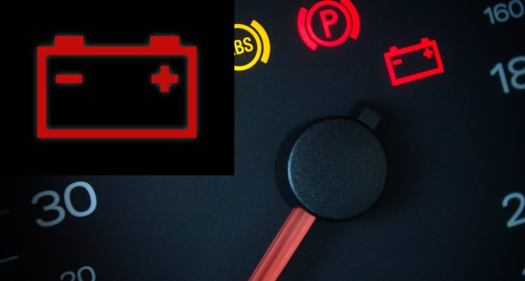
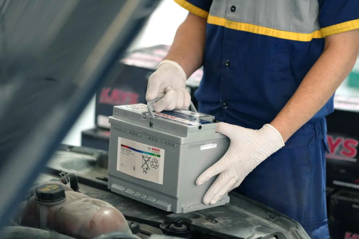

Introduction
Car batteries are essential components that provide power for starting the engine and operating various electrical systems. Recognizing the signs of a failing battery is crucial for preventing unexpected breakdowns and ensuring optimal vehicle performance. This article discusses common battery health indicators and guides maintenance and replacement.
Signs of a Failing Car Battery
- Difficulty Starting: If the car takes longer than usual to start, it may indicate a weak battery.
- Dim Headlights: Dim headlights can be a sign of insufficient battery power.
- Battery Warning Light: A battery warning light on the dashboard clearly indicates a potential battery problem.
- Clicking Sounds: Clicking noises when attempting to start the car suggest a weak battery.
- Frequent Recharging: If you need to frequently recharge the battery, it may be nearing the end of its lifespan.

Battery Voltage Measurement
- Nominal Voltage: 12V
- Healthy Battery: Voltage should be between 12.5V and 13V when the engine is off.
- Weak Battery: A voltage below 12V indicates a weak battery.
- Exhausted Battery: A voltage below 11.5V signifies a nearly dead battery.
Dynamic Voltage Measurement
To assess the battery's ability to deliver high current, measure the voltage drop while starting the engine. A significant voltage drop (below 9V) indicates a weak battery.

Maintenance and Replacement
- Regular Inspection: Have your battery checked by a mechanic every 6 months to assess its health.
- Replacements: Consider replacing the battery if it is more than three years old or exhibits signs of failure.
- Charging: If you don't drive your car frequently, disconnect the battery and charge it monthly to maintain its health.
Conclusion
By understanding the signs of a failing car battery and taking proactive steps for maintenance and replacement, you can ensure reliable vehicle performance and avoid unexpected breakdowns.